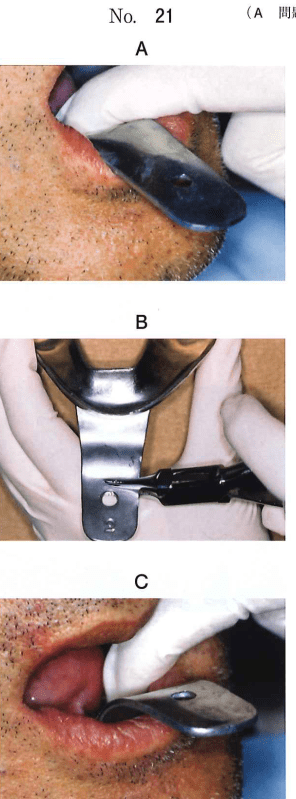
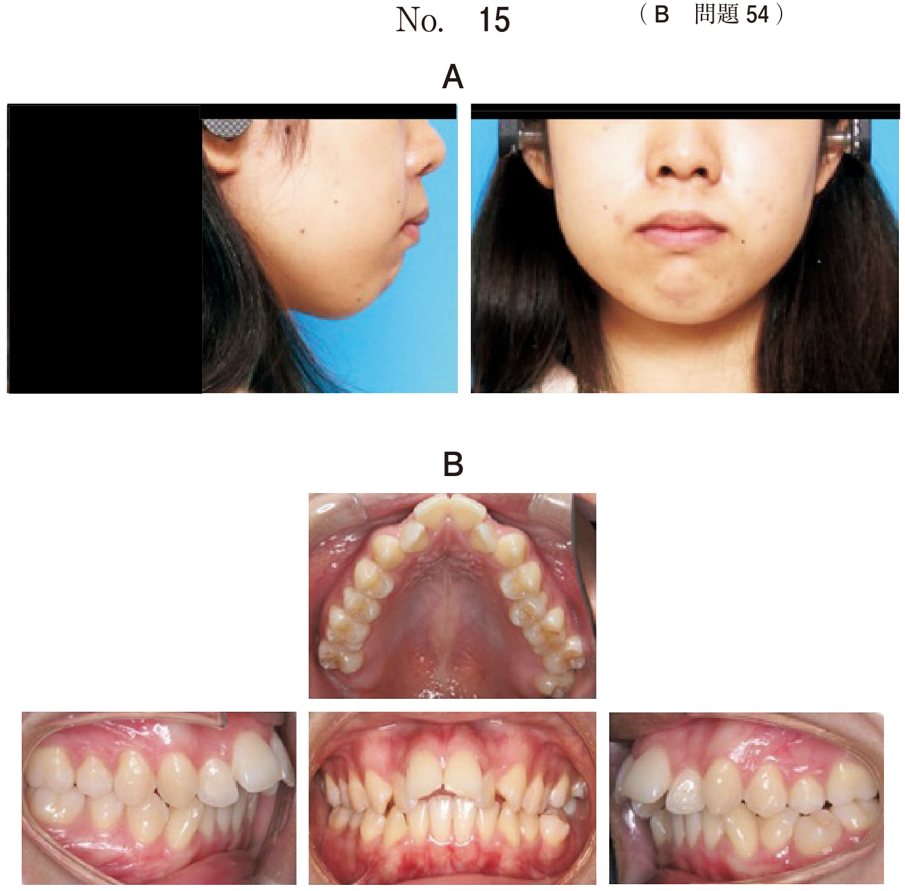

概形印象（preliminary impression）とは、将来の床縁となる辺縁部が含まれた印象域の概形を記録することである。
咀嚼、嚥下、発語の運動に際して床縁が障害にならないよう、通常の機能運動を行わせながら印象域の概形を記録する。
印象辺縁は術者と患者の協力で「つくりあげる」もの。この操作を筋圧形成（border molding, muscle trimming）という。無歯顎の印象は "採得する" より "つくりあげる impression making" とよぶのがふさわしい。
| 特徴 | 内容 |
|---|---|
| 材料特性 | 熱可塑性（加熱で軟化、冷却で硬化） |
| 利点 | 辺縁を部分的に形成できる |
| 使用トレー | ブリタニアトレー（IN式）などの金属製トレー |
熱可塑性のため、辺縁を部分的に形成しながら最終的に義歯床全周の筋の動態を記録できる。
研究用模型上にトレーの外形線、リリーフすべき範囲を表示する。
| 考慮事項 | 理由 |
|---|---|
| 被圧変位量 | フラビーガムなど変位量の大きい部位はリリーフが必要 |
| 顎堤の吸収程度 | 吸収の程度により床縁の位置や印象圧が変わる |
| アンダーカットの範囲 | ブロックアウトが必要 |
| 骨隆起の位置 | 被圧変位量が小さいためリリーフが必要 |
印象採得時の嘔吐反射は患者にとって苦痛であり、適切な対応が必要である。
注意：頭部後傾姿勢は嘔吐反射を誘発しやすい。口呼吸も不適切。
無歯顎患者の個人トレーを設計する際に考慮するのはどれか。2つ選べ。
【解説】個人トレー設計時には被圧変位量（フラビーガムのリリーフ）と顎堤の吸収程度を考慮する。唾液分泌量、安静空隙量、床下粘膜の血行はトレー設計の直接的な考慮事項ではない。
無歯顎の概形印象にモデリングコンパウンドを用いる理由はどれか。1つ選べ。
【解説】モデリングコンパウンドは熱可塑性材料のため、辺縁を部分的に形成できる。表面再現性やアンダーカット再現性はアルジネートの方が優れる。
60歳の男性。上下顎全部床義歯が動揺して食事ができないことを主訴として来院した。検査の結果、義歯を再製作することとし、概形印象採得を行うこととした。下顎既製トレー試適時の写真（別冊No.21A）、トレー調整時の写真（別冊No.21B）及び調整後のトレー試適時の写真（別冊No.21C）を別に示す。
この一連の操作の目的はどれか。2つ選べ。

【解説】写真はトレーの唇側辺縁を削除する操作。口唇の可動域を確保し、トレーの浮き上がりを防止する目的がある。舌の可動域確保は舌側の調整で行う。
2種類の無歯顎患者用個人トレーの写真（別冊No. 20A、B）を別に示す。
Aと比較したBの特徴はどれか。3つ選べ。

【解説】Bはハンドルがないタイプ（咬座印象用）。Aと比較して、口唇の機能運動が可能、咬合時の印象採得が可能、咬合平面に垂直な圧が加わる。ダイナミック印象や印象圧コントロールはAの方が優れる。
印象採得時における嘔吐反射への対応はどれか。3つ選べ。
【解説】嘔吐反射への対応は表面麻酔、不安軽減、静脈内鎮静。口呼吸と頭部後傾姿勢は嘔吐反射を誘発しやすいため不適切。鼻呼吸を指示し、頭部はやや前傾させる。